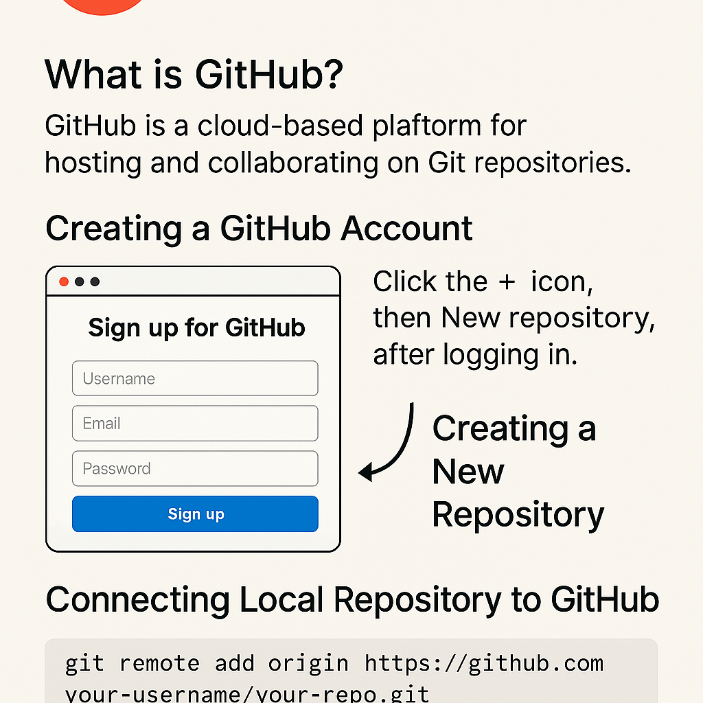
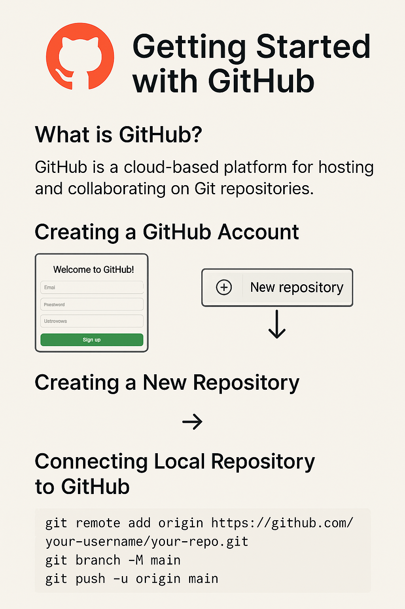
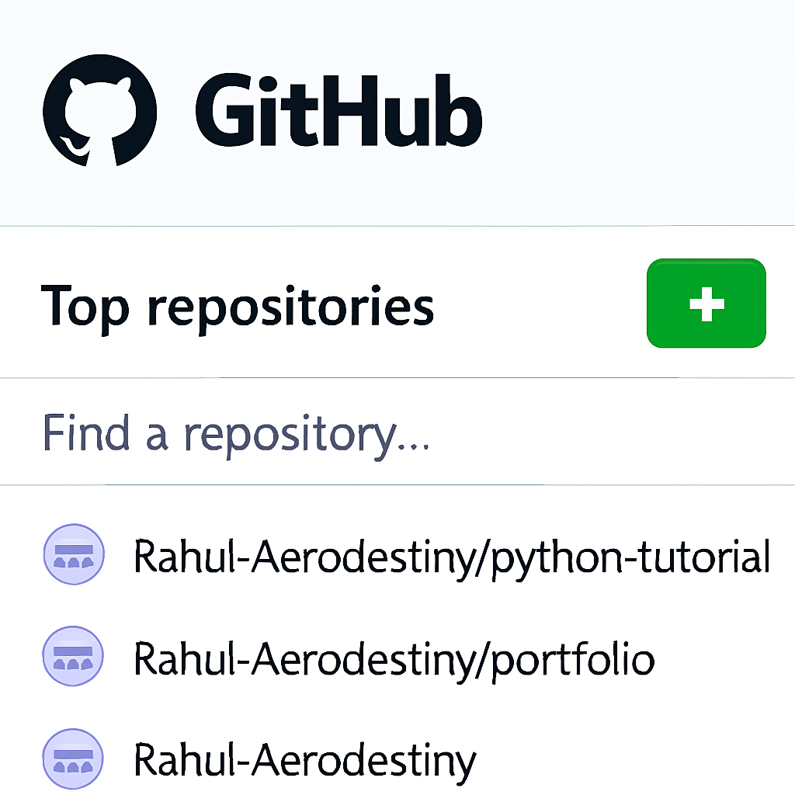

Getting Started with GitHub
What is GitHub?
GitHub is a cloud-based platform for hosting and collaborating on Git repositories. It enables version control, issue tracking, and team collaboration—all in one place.
Creating a GitHub Account
Visit github.com and sign up with your email. Choose a username and password, then verify your email to activate your account.
Creating a New Repository
After logging in, click the + icon in the top-right corner and select New repository. Fill in the repository name, description, and choose visibility.
Connecting Local Repository to GitHub
Use the following commands to push your local Git project to GitHub:
git remote add origin https://github.com/your-username/your-repo.git
git branch -M main
git push -u origin main
Cloning a Repository
To work on an existing GitHub project, clone it using:
git clone https://github.com/username/repository.git
Making Your First Commit
After editing files locally, use the following commands to commit and push changes:
git add .
git commit -m "Initial commit"
git push
Viewing Your Repository
Visit your GitHub profile and navigate to the repository to see your files, commits, and activity.
